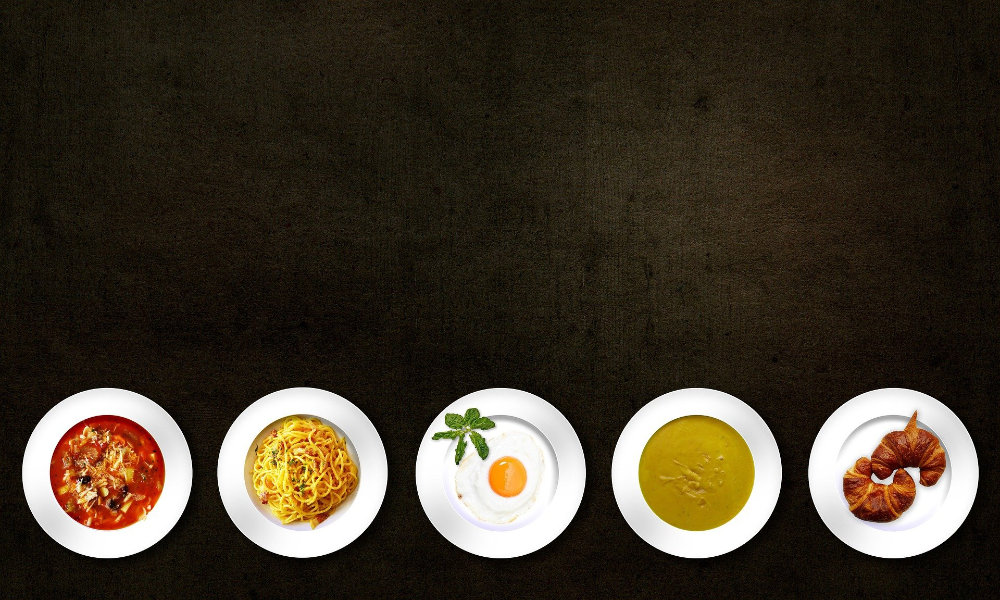

Hakkımızda
Biz kimiz?
Elbette dünyanın her noktasında olduğu gibi Şevk-Et’in menüsünde klasik steakhouse lezzetlerine geniş yer verdik. Et deyince dünya mutfaklarında klasiğe dönüşen T-bone Steak, Tomahawk, Newyork Sprit, Porterhouse, Dry Ribeye ve Flet Mignon mutlaka menümüzde yer almalıydı ve bizler de orijinal reçetelerine bağlı kalarak bu lezzetlere menümüzde yer verdik. Her zaman dünyanın dört bir yanından misafirlerimizi ağırlıyoruz. Ve her zaman Türk Mutfağı’nı gelen yabancı konuklarımıza en iyi şekilde tanıtmak istiyoruz. Şevk-Et’te de bu heyecanla Türk Mutfağı lezzetlerine ve kendi üretimimiz olan et seçeneklerine geniş yer verdik. Şevk-Et’in yeniden yorumladığı bu tatlar derseniz; Şevk- Et’e özel gurme burger, steak, gurme sosisler, Osmanlı sucuğu, Frankfurter dana sosis, Frankfurter tavuk sosis, cheese peynirli corner sosis, ördek göğüs füme, dana brezola, dana spec ve biberli salam gibi kendi ürettiğimiz tatları örnek gösterebilirim.
Kurumsal
Et konusu hem sağlık açısından hem de ideal lezzeti yakalama konusunda çok önemsediğimiz bir alan. Bu nedenle etin lezzetini arttırmak ve deneyenlerin kolay kolay unutamayacağı bir lezzet yakalamak için çok özenli davranıyoruz. Etlerimizi özel yetiştirilen cinslerden seçiyor ve etlerimizi 28-60 günlük periyotlarda özel dry dolaplarımızda bekleterek çok daha kaliteli steak eti elde ediyoruz. Füme etlerimizi tamamen kendimiz üretiyoruz ve Avrupa standartlarında misafirlerimize sunuyoruz. Şevk-Et olarak sosis ve sucuk üretimimizi bizzat kendimiz yapıyoruz. Tüm steak çeşitlerimizi özel yapım asansörlü ve yüksek ısı üreten mangalımızda özel bir pişirme tekniğiyle pişiriyoruz. Daha sonra Empero fırınlarda özel pişirme teknikleri uygulayarak sunuma hazırlıyoruz.
Vizyon & Misyon
Amacımız; gerçekleştirdiğimiz projeler ile sektörde öncü olmak, farkındalık yaratmak ve sürdürülebilir turizmi desteklemektir. Sürdürülebilir turizme yönelik çalışmalarımızı; vizyonerlik, doğa ve çevreye saygı, insana değer, samimiyet ve mükemmeliyetçilik ilke ve değerlerimize uygun olarak gerçekleştiriyor ve düzenli olarak gözden geçiriyoruz. Regnum Hotels olarak bu politika kapsamında, tüm hizmetlerimiz için amaç ve hedeflerimizi belirliyor, bunlara ulaşmak için sorumluluklarımızı tanımlıyor, çalışanlarımız ve tedarikçilerimiz başta olmak üzere tüm paydaşlarımızın katılımını destekliyoruz.